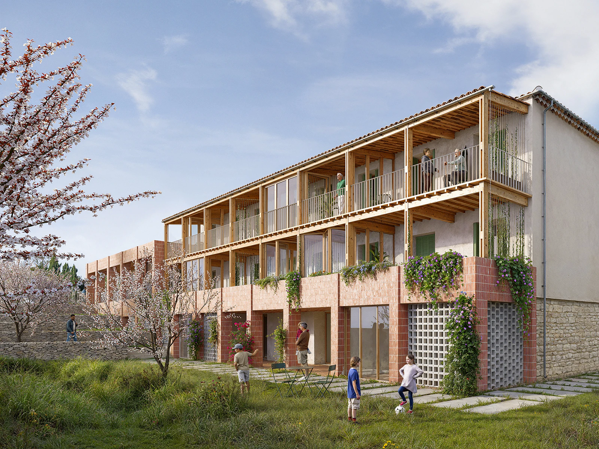

VISU VISU
FR
/
EN
Création d'images pour des projets d'architecture, de scénographie et de design. Visu Visu vous accompagne dans la représentation de vos projets, de la modélisation 3D à la réalisation de rendus photoréalistes et texturés.
Victor Mauro
contact@victormauro.fr
Atelier Aïno, BMT, avec Lambert David, 2023

Emmanuelle Lainé, Méjanes, 2025
Protoclub, EMT_02, 2025
Protoclub, EMT_01, 2025
Aimko.P, grand salon, 2024
Aimko.P, petit salon, 2023
Aimko.P, concept store, 2023
Atelier Aïno, BMT, avec Lambert David, 2023
CT&GP, 55MPC, 2023
Atelier Philippe Parreno, Sharjah, 2022
CT&GP, Enso, 2022
Radar, Pulse, 64Hz, 2022
Emmanuelle Lainé, Gare de Chelles, 2022
CT&GP, Vérandah, 2022
Alpha Immo, Communica, 2022
Alpha Immo, Communica, hall d'accueil, 2022
Mauro, Rigaud, salle de bain, 2022
Mauro, Turcon, 2021
Mauro, Turcon, 2021
Pello, 9RR, salle à manger, 2021
Pello, 9RR, chambre nuptiale, 2021
Pello, 9RR, dépendance, 2021
Mauro, Sabater, pergola, 2020
Mauro, Sabater, pergola, 2020
David Leininger, Abri, 2020
David Leininger, Abri, 2020
Nowatt Lighting, Onyx, version bois, 2020